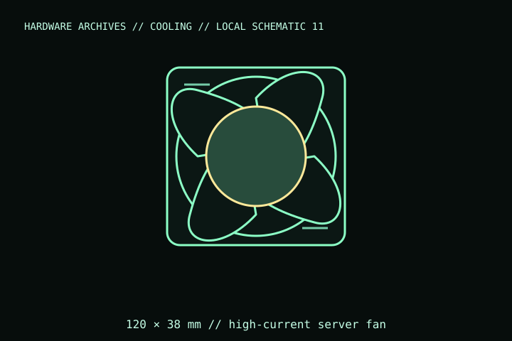

[ INDIVIDUAL COMPONENT // COOLING ]
Delta FFB1212EHE-F00
A 12 V, high-speed 120 × 38 mm Delta FFB series axial server fan. The suffix matters: this record targets FFB1212EHE-F00; verify the nameplate and lead termination on any pulled or refurbished unit.

IDENTIFICATION: Match the complete model name, suffix, article number, bundle, revision, and host manual to the physical label before installation. Similar product names and variants may use different wiring or dimensions.
Specifications
| Catalog subcategory | Server fans and blowers |
|---|---|
| Exact model | Delta FFB1212EHE-F00 |
| Frame and thickness | 120 × 120 × 38 mm axial fan |
| Electrical rating | 12 V DC; 2.0 A nominal / 24 W nominal per manufacturer data; do not infer from a similarly named suffix. |
| Speed / connection | Approximately 4,000 rpm; three-wire/tachometer lead variant. Check exact lead plug and pinout against the specific datasheet. |
| Host / mounting | Industrial/server chassis fan; high current and high acoustic output. Standard PC motherboard fan headers are not assumed safe for its load. |
Compatibility, installation & service
- Use a 12 V DC supply/controller rated for the fan’s startup and operating current; 24 W nominal is far beyond a typical motherboard fan header.
- Confirm mounting hole spacing, connector termination, and tach lead pinout from the exact F00 datasheet before wiring; do not rely on wire colors alone.
- This is a high-speed 120 × 38 mm axial fan, not a drop-in 120 × 25 mm case fan; verify chassis depth, guards, and airflow direction.
Service notes
Disconnect the high-current supply before cleaning or servicing. Keep fingers and loose cables clear; inspect guards, bearings, and lead insulation. Replace rather than dismantle a damaged sealed fan.
Manufacturer references
- Delta Fan — FFB1212EHE-F00Manufacturer model page and specification reference.
- Delta Electronics — FFB1212EHE specification PDFManufacturer-hosted datasheet; verify suffix and lead configuration against the unit label.
Verify fit, wiring, and ratings against the manufacturer document for the exact unit and host. This catalog record is an identification aid, not a compatibility guarantee.